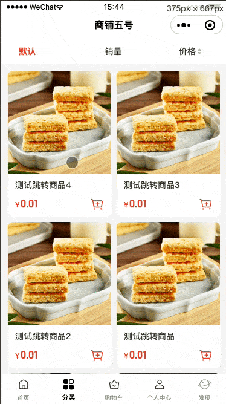
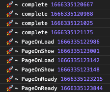

三招应对小程序多次跳转
背景
近日收到产品的反馈，说小程序商品列表页中的商品卡片连续快速点击跳转商品详情页的话有时会出现两次跳转。小程序跳转为什么会跳转两次呢，如果这问题存在，小程序其他涉及跳转的地方是否都会有这问题呢？带着疑问，笔者开始了对项目此部分的探究。
问题探究
场景复现
首先展示下多次跳转的场景，确实路由跳转了两次，这时执行回退，第一次会回退到相同的商品详情页需要再次回退才能回到商品列表页。

问题分析
首先对这部分的前端 wxml 结构进行分析：
商品列表页为小程序 tab 页面，页面中引入了goods-category-list自定义组件，这组件依赖于category-goods-list自定义组件，这组件引入了biz-goods-list项目公共自定义组件，此组件中包含了goods-item组件用于专门展示每一个商品卡的样式。
看到这你是不是会吐槽为什么一个商品列表如此复杂，直接用wx:for配合goods-item组件不就可以实现了嘛。由于历史原因，项目中有很多商品列表的场景且样式各样，估计为了统一维护就把所有场景都整合入一个公共组件造成了现在这模样。当然公共组件抽取复用可以避免很多造轮子重复工作，但是如果每一个场景都要重新写的话那就不能称之为公共组件，不能为了抽取组件而抽取。当然这不在本文的探讨范围内，就不深究啦～
再看看小程序跳转逻辑：
在用户点击商品卡片的时候触发goods-item组件根节点的bind:tap事件，绑定的事件会进行埋点数据获取并上报，然后利用项目封装的 Navigator 进行小程序跳转。
从代码层面看路由的跳转没有问题，封装的 Navigator 在项目其他地方也都用的没问题，不会出现多次跳转的情况。因此排除是项目中封装的 Navigator 引起的问题。
从体验上看，每次能复现两次跳转的情况中，点击商品卡片跳转至商品详情页到页面展示耗时很长，期间会有空白页面的情况，且两次跳转也只会出现在第一次进入商品详情页，用真机高性能机模拟的时候又很难复现。如果改用跳转至那些内容相对简单的页面，跳转速度很快且页面渲染也快，这时就几乎复现不了多次跳转的场景。
原因总结
为了查看各个时间点，我在路由跳转的 complete 回调中以及在页面的 onLoad，onShow 和 onReady 三个生命周期中分别输出当前的时间点做对比，结果如下：

由上可以看出在页面 onReady 的之前还会执行新的路由跳转引起新一轮的生命周期，并在最后页面执行了两次 onReady 生命周期，因此引起了路由的二次跳转。
在小程序中，虽然每个页面都有一个渲染页面的 WebView 线程，但是运行脚本的逻辑层线程是共享的，因此虽然页面调整会切换页面层级，但我们的业务代码执行上下文依旧在同一个线程中。所以跳转过程中原本执行的逻辑会继续执行。考虑到微信侧应该在跳转做了节流处理避免了点击几次跳转几次的情况，所以连续点击触发跳转只有那些未能被节流拦截的请求将会引起再次跳转。
至于为什么跳转快的场景不会多次跳转，是因为在跳转过程中，新页面能更快的 ready，使得我们可能触发多次点击跳转的时机变短。简单来说就是本来在旧页面被切换移除到新页面准备好的 0.5s 内用户都能点击触发路由跳转，现在只有 0.1s 的时间。
解决方案
方案一：业务侧调用时增加防抖 debounce
此方案是处理此类问题最容易想到的方案，通过对点击商品卡片事件添加防抖，来减少用户因为连续多次点击触发小程序路由跳转的可能性。此方案在很多其他类似的场景很常用，在此场景中这方法可以很大程度减少问题的复现，但是在小程序开发者工具上或者是性能差的机型上还是无法全部避免，且设置的时间间隔多少也没有标准。当然我们可以设置防抖间隔很大达到每次尽量触发一次路由跳转的目的，毕竟这里我们的目的是跳转至目标页面不应该有点击两次的情况，但是如此暴力的方式还是不太友好，且设置了防抖会导致原本点击事件中的埋点上报以及其他操作记录不准确。
1 | onGoodsItemTap = debounce(function (this: GoodsItem, e) { |
方案二：添加跳转锁 Lock
和方案一限制触发时机不同，方案二通过添加锁 Lock 对跳转能力进行限制，保证无论业务方触发调用几次路由跳转，每次都只执行一次。
为了对小程序跳转进行统一管理，可以在项目中统一封装 MyNavigator 类，内含小程序所有的跳转包括 switchTab、reLaunch、redirectTo、navigateTo、navigateBack 等。在小程序进行跳转的过程中阻止其他跳转行为，只有在新页面 onShow 完成后才允许小程序进行其他跳转。
改造 MyNavigator 类作为实例引用：
1 | class MyNavigator { |
既然有关锁操作必然就需要有开锁操作。一开始考虑是在路由完成跳转的 complete 回调中开锁，但是从现象中可以看见，回调 complete 的时机和页面 onReady 之间可能存在较大时间差，这期间还是可能引发路由跳转，所以需要将开锁操作时机延后。在页面的装饰器中对 onShow 方法增加navigator.isLock = false;实现在每一个页面 onShow 的时候都能开锁支持小程序后续跳转。
tips：上述在页面 onShow 生命周期开锁能够支持小程序内部跳转，但是如果跳转的目标是其他小程序的话锁就无法及时打开，所以需要在 wx.navigateToMiniProgram 方法的 complete 回调方法中将锁打开。
此方案能够保证项目每次在跳转目标页面展示之前无法进行其他跳转，所以不会存在多次跳转的情况，跳转加锁方案在加锁这步没有问题，但是如果开锁失败就会引发不可预估的问题，比如下面两种场景。
如果项目原本没有统一的装饰器的话，就需要在每一个页面的 onShow 生命周期中加开锁的步骤，这显然是不合理的。如果项目中有页面没有使用装饰器的话但又有页面跳转至此页面，那么也会导致项目失去跳转能力，从而导致不可预估的后果。此外由于开锁操作加在装饰器中，如果装饰器中的其他逻辑报错导致逻辑执行到不了开锁操作这一步，那么跳转功能也将失效。
如果跳转因为其他不可控因素导致失败，而一直没法进入新页面触发 onShow 生命周期执行开锁操作，那么小程序就将停留在页面且失去了所有跳转能力。（虽然这种情况理论上不存在，但是谁能保证微信基础跳转功能不会出个问题啥的～）
方案三：分包异步化
跨分包自定义组件引用：一个分包使用其他分包的自定义组件时，由于其他分包还未下载或注入，其他分包的组件处于不可用的状态。通过为其他分包的自定义组件设置占位组件，我们可以先渲染占位组件作为替代，在分包下载完成后再进行替换。
从上面的问题原因分析中可以知道，因为小程序执行跳转到新页面展示耗时长，在这期间用户可以一直点击原页面的跳转按钮，因为无法被第一次节流从而引发二次跳转。所以可以从这方面优化入手，提高页面跳转性能。
商品详情页因为内容多且杂，项目将其抽取为独立分包，页面中引入了很多子组件，各个子组件又依赖很多其他组件，因为复杂的依赖关系，所以在主包中跳转进入此独立分包页面加载渲染耗时相对长且目标页渲染时间久。
考虑到一些组件加载完成需要依赖其他组件的加载，我们可以结合分包异步的特性进行调整。因此将目标页的内容和涉及到的组件移入对应分包，页面加载时如果分包未下载或注入就用占位组件替代，从而大幅减少页面首次渲染时间，即可用时间。此方案不仅能解决多次跳转问题并且还提升了用户体验，更为可取。
总结
本文提供了三种小程序多次跳转的解决思路：
- 第一种是在业务侧添加点击触发的防抖，通过控制跳转请求发起避免多次跳转的情况。
- 第二种是为跳转行为添加锁，通过开关锁实现新页面展示之前无法进行其他小程序跳转避免多次跳转。
- 第三种是通过分包异步化提高跳转性能避免多次跳转。
不仅限于小程序路由跳转，这三种思路也可应用于其他涉及多次触发的场景。希望本文对实践中遇到类似问题的你能有启发！